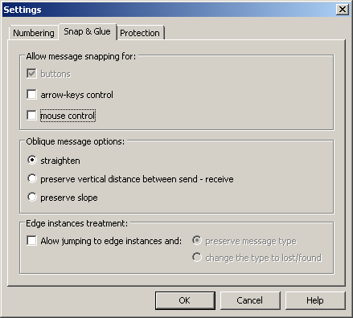

Drawing Settings
The SCStudio frontend may be configured via menu
Check → Drawing → Settings….
Concrete configuration sections are described below.
Message Numbering
Message numbering and its configuration is described on a separate page.
Message Snapping
When a message is dropped onto the drawing, the user has to connect this message to the instances manually. If Message snapping is enabled, then all new messages are automatically snapped to the nearest instances as soon as the user releases the mouse button. The nearest instances are taken from the mouse position.
Snapping can be enabled via Check -> Drawing -> Settings…,
tab Snap & Glue. Following dialog will be shown:

Options are:
Enable/disable message snapping
- sets whether message snapping is enabled, otherwise all
other options are disabled.
When the message is already dropped on the page, user can still use
snapping. As the message is moved, it automatically snaps to the nearest
instance(s) (if exists). Since the message can be oblique, three types of
snapping are provided:
straighten
- the message is straightened on the current location of the
mouse cursor and snapped to instance(s).
preserve
vertical distance between send - receive
- endpoint(s) of the message are horizontally stretched and snapped
to the nearest instance(s).
preserve slope
- the message stays obliqued as it was. The endpoint(s) will
be prolonged to the nearest instance(s).
Restrictions
- Multiple message snapping is not implemented.
- Lost and Found messages are snapped only at one endpoint.
- Messages can be snapped only to the instances lines. Instance's head and end symbols are ignored.
Protection
In the Protection section, some drawing protection options can be set.
Normally, shapes can be rotated in Microsoft Visio. However, the
ITU-T Z.120 standard specifies the instances to be drawn vertically.
The option Do not allow to rotate instances may be set to
disable instance rotating.